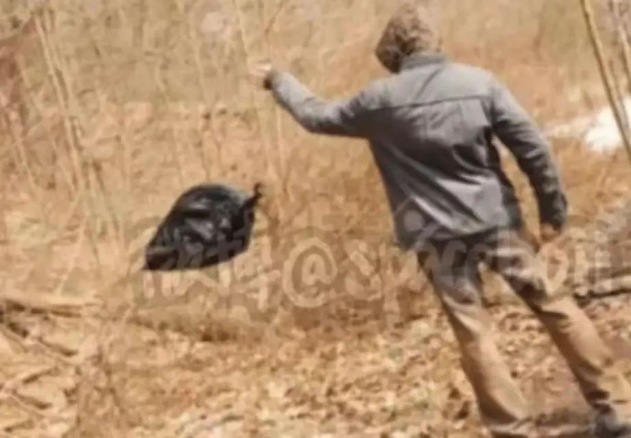
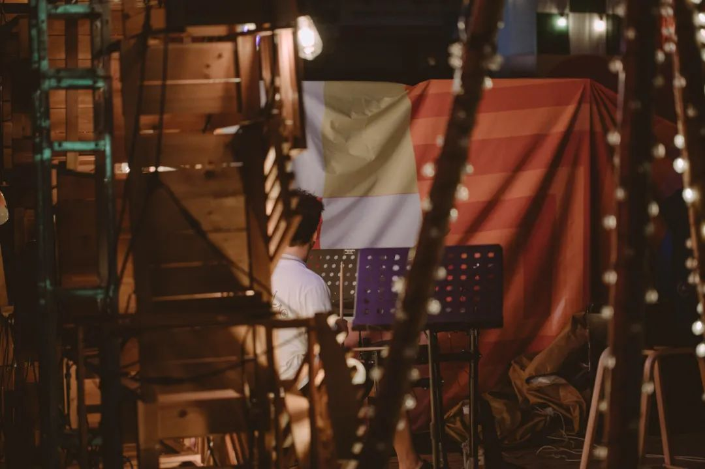
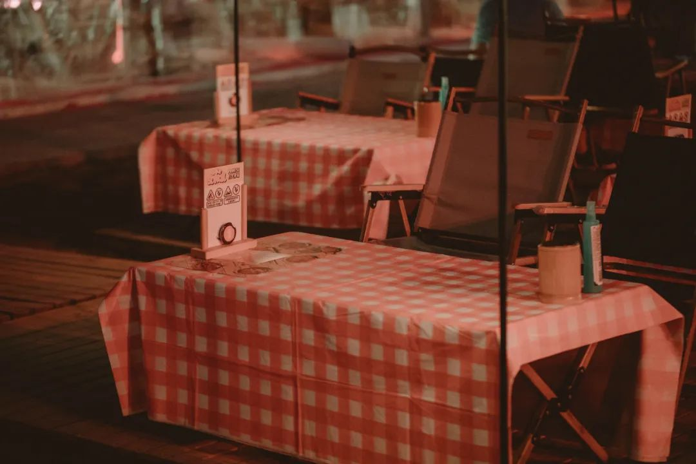
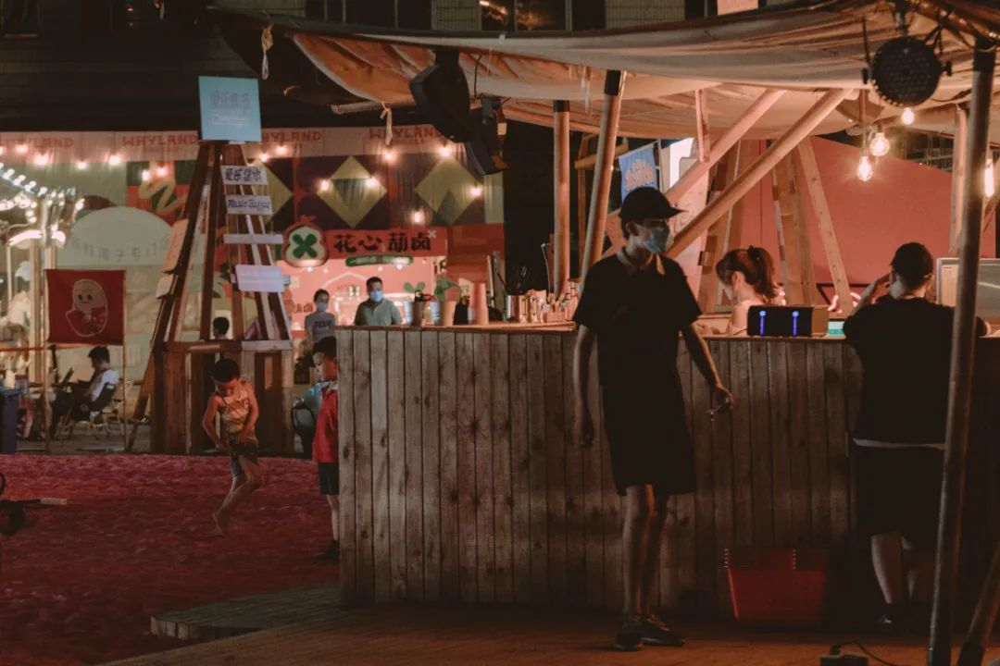
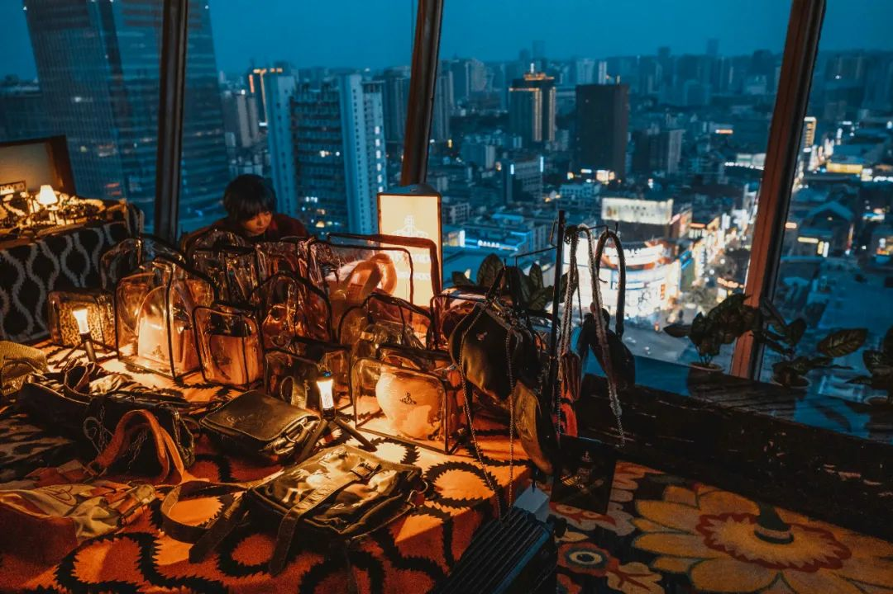

共计1167个字，10张图
好朋友鼓，上班时候会写一些发疯文学。大抵是受够了上班的苦，终于明白了什么叫做文学是从苦难中来的，然后写成了一段段被上班逼疯的文字。我的烦心事也像关不掉的后台进程。在前台操作窗口看起来什么也没有，什么也找不到。打开任务管理器，都在后台占着内存、磁盘、网络、CPU | GPU. 虽然每一个都不大，都不觉得看起来是什么搞不掂，但胜在无穷无尽，pretty hard to kill or terminate. 更有隐藏本，特洛伊木马藏在不旋转的游乐场。也许我该和它们的生产商好好谈一谈了。为此，我又找到了另外一个拟物的好词来描述：一斤棉花和一斤铁是一样重的。听起来有点像当时药水哥的清醒直播，劝拜金女跟他走：五十块钱的手表、和五百万的劳力士，时间是一样的。刘波是清醒地收割了疯狂药水哥的钱，那钱来自追不上疯狂又鄙视清醒、刚刚会上互联网的短毛猩猩。现在看文献的感觉，有点像在泔水桶里捞饭吃。不是那种鲍汁捞饭的意思，这中文不能这样解。应该是在垃圾桶里捡饭吃。好饭一碗，被散作了几大桶，像布施粥品一样去往四方寰宇。再怎么膨大，那也只有一碗。散秩又拼凑，只有出文章的实验室知道自己在搞些什么鬼。看不到一点有用的东西。别说如何想一个新东西出来，但是整理散落的(蒎移)物就已经很令人作呕了。而且以后还得跟这个圈子里的人公事。我未见过哪个待在情绪垃圾场的人，出来之后身上不满身骚。所说平台指向明确。所有在生活中的迷惑操作，实则都可以总结成一种精神自残行为的躯体化投射。大意是说，譬如限制起来着实很愚蠢的事，只不过是因为对外面不熟的世界太过恐惧。一些广义上认为更通透的人，并不见得抗风险实际资本有多高，而是对风险很熟悉。我去赶飞机火车，卡点多匀了十分钟都会反思自己。有的人就是会放半个小时在那，什么事也不干地preserve不安。
去了个无聊的市集。我对这里的评价是，都比不上我中学操场上开的爱心义卖跳蚤市场，的四分之一。真没劲，五分钟就出来了。但还是拍了点图，随便校正了一下颜色。事实上给我一坨屎，那也能拍出朵花来，微距镜头招呼一下或者 总之有办法去构建。并不能以我的图来认为这里不错。我拍归我拍，是我的习作，跟这里只有那么点关系。就好比读黄鹤楼的诗，但不会有懂的人真的上黄鹤楼一样。


断续写到这里。正好朋友喊出去玩，就出去玩。长沙春天百货顶楼旋转餐厅的湖闹市集，但是旋转没有开。想拍照，但是在窗边用手擦了擦，似乎很久没有搞卫生了，不能完全怪长沙天气雾蒙蒙。和好朋友拍的照片，在CCD里是千禧年，在单反里是今年，看起来很不错。下次编入情绪稳定的一篇。
周一周一，内蒙古冰。今天长沙很凉快，早上骑车去吃早饭甚至有点冷。粉店八点半就粉也没有了、面也没有了。老板把倒数第二碗给了我，跟后面的食客唠嗑等原物料，说铺子和这栋楼也快要拆掉了。等开会的人来齐也太无聊了。哈欠打得我颌骨周围肌肉组织疲劳。